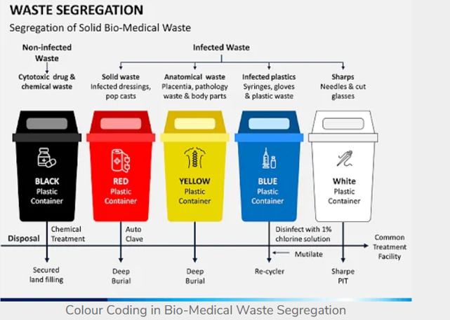

Biomedical waste, also known as medical waste, is defined as any waste that is generated during the diagnosis, treatment, or immunization of human beings or animals. This type of waste includes materials that are infectious, radioactive, or potentially hazardous to human health and the environment. Examples of biomedical waste include needles, syringes, medical instruments, gloves, gowns, expired or unused medications, and laboratory cultures. Color coding is very important for Bio medical waste management.
So why is there a need for biomedical waste color coding?So why is there a need for biomedical waste color coding?
Color coding isn’t there just for your comfort: it also represents the very basic principle that waste doesn’t all go to the same place. Different kinds of waste also means different of ways of handling them. Just think of hazardous medical chemical waste: it is essential to separate them from the other types of waste, in order to be safely processed. Hazardous medical waste is typically handled by incineration instead of going to a landfill, but nowadays, there are even more modern and practical ways to handle biomedical waste management on-site, like autoclaves, or integrated sterilizers and medical waste shredders.
Nonetheless, any company that creates biomedical waste absolutely has to clearly label bins with color coding, to ensure their personnel disposes correctly of all types of medical waste.
To understand biomedical waste management color coding…
Naturally, you would need to be familiar with the different types of (bio)medical waste. Depending on the sources you check, you may find slight differences in categorization, but basically, these are the types of waste that can be considered as biomedical:

The management of biomedical waste is critical to ensure the safety and well-being of healthcare workers, patients, and the general public. Improper disposal of biomedical waste can lead to the spread of diseases, contamination of water sources, and harm to the environment. Therefore, it is essential to follow strict guidelines and regulations for the handling, storage, and disposal of biomedical waste.
The World Health Organization (WHO) has provided guidelines for the management of biomedical waste, which include the segregation, packaging, labeling, and treatment of waste. Segregation of waste is done based on its type and potential risk, and it is essential to ensure that infectious waste is not mixed with non-infectious waste. The packaging of biomedical waste must be done in such a way that it minimizes the risk of exposure and injury during handling and transportation. Proper labeling of waste containers with clear and visible signs indicating the type of waste and the potential risk is also crucial.
Treatment of biomedical waste can be done through various methods, including incineration, autoclaving, chemical treatment, and microwave irradiation. These methods destroy the pathogens present in the waste and reduce the volume of waste, making it safer for disposal. After treatment, the waste can be disposed of through landfilling or other approved methods.
In addition to guidelines and regulations, it is also essential to create awareness and education programs for healthcare workers and the general public on the proper management of biomedical waste. Such programs can help reduce the risk of exposure to infectious materials, improve waste management practices, and protect human health and the environment.
In conclusion, the management of biomedical waste is critical to protect human health and the environment. Proper handling, storage, labeling, and treatment of biomedical waste, as well as creating awareness and education programs, can help minimize the risk of exposure to infectious materials and ensure the safe and responsible disposal of biomedical waste.